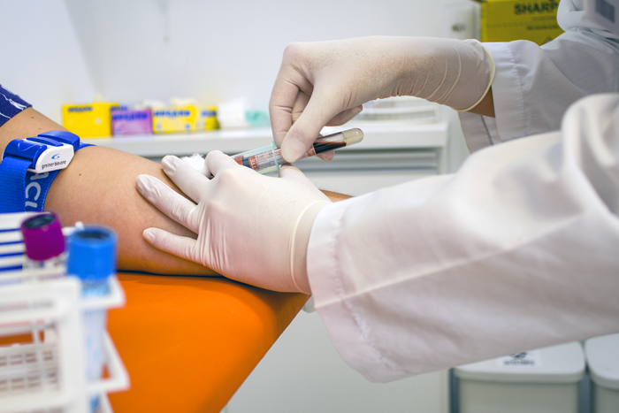

Nossos Serviços

Consultas Médicas
Atendimento clínico com profissionais capacitados em diversas especialidades.

Exames Laboratoriais
Coleta e análise de exames com agilidade e precisão.

Exames de Imagem
Ultrassonografia, raio-x e outros exames por imagem com tecnologia de ponta.
Nutrição
Acompanhamento nutricional personalizado para todas as idades.
Cardiologia
Consultas e exames voltados para a saúde do coração.
Neurologia
Diagnóstico e tratamento de doenças neurológicas com especialistas qualificados.
Nossa Equipe
Dra. Ana Souza
Diretora Clínica
Dr. Carlos Mendes
Cardiologista
Dra. Fernanda Lima
Neurologista